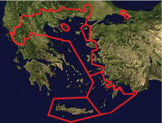

Ortodoks Dünyada 1453 Depremi: “Üçüncü Roma Moskova”
Hıristiyanlık tarihinde dil odaklı doktrin özerkliğini ilan eden ilk ulusal Kilise, aynı zamanda en eski Hıristiyan kurumu, Ermeni Kilisesi’dir. 450 yılında Kadıköy’de toplanan din kurultayının kararlarını reddeden Ermeniler, özgün dil ve alfabeleriyle yazıp okudukları İncil’le birlikte “monofizit” doktrini benimsemiş; zaman içinde Rum Ortodoks Kilisesi’nden göreceli, Latin Katolik Kilisesi’ne de mesafeli bir bağımsızlık elde etmiştir.
Ermeniler, Süryaniler, Kıptiler vb. gibi antik çağlardan beri özgünlüklerini sürdüren kadim cemaatlerin oluşturduğu istisnalar bir yana bırakılırsa...
Hıristiyanlık âleminin en geniş bölümü, İncil’in Latince ve Grekçe yorumları üzerinden yürütülen din savaşlarının sonucunda, bambaşka dillerde konuşsalar bile yazıda Latin ve Grek alfabesinin türevleriyle ayrışmışlardı.
6. yüzyıldan beri “ekümenik”, yani “küresel” (cihanşümul) sıfatını taşıyan Konstantinopolis Ekümenik Patrikliği; Hıristiyan âlemine öncülük yetkisini 8. yüzyılda düzmece bir vasiyetle “Katolik”, yani sözcük anlamıyla “evrensel” ilan edilen Roma Papalığına kaptırdıktan sonra bile dinsel yapılanmada devasa bir coğrafyaya hükmediyordu.
Yunanistan’dan Asya’ya uzanan Doğu Roma İmparatorluğu’nun Ortodoks ahalisi başta; Ukrayna, Rusya, Belarus Slavları, Gürcü, Bulgar, Sırp, Makedon, Rumen vb. Ortodoks Kiliseleri, en üst makam olarak Konstantinopolis Patrikliğinin otoritesine bağlıydılar. Bu cemaatlerin Patrikleri ve hatta kilise papazları, Konstantinopolis Başpatriği tarafından atanır ya da onaylanırdı.
Doğu Roma İmparatorluğu’nun Osmanlı fethi karşısında önce Anadolu, ardından Trakya’da yavaş yavaş erimesi, elbette Konstantinopolis Patrikliğinin otoritesini de sarsıyor, Yunanistan hariç gerek Balkanlar, gerekse Rusya’da Konstantinopolis Patrikliğinden kopma eğilimleri artıyordu.
Sonuncu imparator Konstantinos Palailogos’un, mülkünden geri kalan son kale, başkent Konstantinopolis’i Osmanlı’ya kaptırmamak amacıyla Papa’nın yardımını talep etmesi; Papa’nın otoritesini asla tanımayan Ortodoks Rusya’da, bardağı taşıran son damla oldu. Konstantinopolis Patrikliğinin 1448 yılında Papa’nın Floransa’da Katolik ve Ortodoks birliğini sağlamak amacıyla topladığı din kurultayına katılmasını gerekçe göstererek, Moskova Patrikliğini otosefal, yani bağımsız ilan etti.
1453’te Konstantinopolis’in Osmanlı tarafından fethiyle Doğu Roma’nın tamamen ortadan kalkması, Ortodoks kilise yapılanmasında bir hukuk boşluğu doğurdu. Çünkü Konstantinopolis Patriklerini Roma imparatorları atar, konsiller de imparatorlar tarafından toplanırdı.
Fatih Sultan Mehmet, Ortodokslar ile Katolikler arasındaki husumeti ve Konstantinopolis Rum Patrikhanesi’nin Ortodoks dünyasına önderliğinin, yani “ekümenik” sıfatının önemini biliyordu.43 Gayet doğru bir analiz yapmıştı: Osmanlı’nın yayıldığı ve yayılacağı gayrimüslim coğrafyanın geniş geneli, Ortodoks’tu. Öyleyse Ortodoksların gönlünü hoş tutmakta ve Katolik dünyaya karşı verilecek savaşlarda Ortodoksların desteğini almakta yarar vardı. Dolayısıyla fetihten hemen sonra Konstantinopolis Rum Patrikliğinin varlığını güvence altına almakla yetinmedi, hukuksal alanda daha geniş yetkiler tanıdı. Başpatriği hem Rum Ortodoks Kilise’nin ruhani lideri hem de “Üç Tuğlu Paşa” rütbesiyle Rum Ortodoks “milletbaşı” (Etnark) atayarak, Patrikhane’ye salt dinsel değil, kamusal bir kurum niteliği kazandırdı.
İsa’dan Sonra’ki takvimde ilk kez, Hıristiyan imparator değil, Müslüman bir sultanın emriyle, Konstantinopolis’te Ekümenik Konsil toplandı. Fatih, Rum Patrikhanesi’nin Ortodoks âleme önderliğine o kadar önem veriyordu ki, hemen 1453’te topladığı din kurultayının başlıca amacı, Floransa Konsili’nde varılan birlik anlaşmasını reddetmek ve böylece Rusya’yı Konstantinopolis Başpatrikliğinin otoritesine döndürmekti.
Ama Fatih’in akıllı ve akılcı tasarımı, Konstantinopolis Rum Patrikliğinin ne Rusya ne de Ortodoks dünyadaki önderlik otoritesini tam olarak korumaya yetebildi.
Rusya, 1453’ten öteye Müslüman Osmanlı egemenliğindeki Konstantinopolis Rum Patrikhanesi’nin Ortodoks dünyanın merkezi, Başpatriğin de “ekümenik”, yani küresel önder olamayacağı savıyla Moskova Patrikliğinin bağımsızlığında ısrarlıydı. Bu çıkışa karşı, “ekümenik” önder sıfatına dayanan Konstantinopolis Rum Patrikliği de, Moskova Patrikhanesi’nin varlığını resmen tanımamakla misilleme yaptı.
Son imparator Konstantin Palailogos’un, 1460’da Osmanlı’ya geçen Mora Yarımadası’ndan kaçıp ailesiyle birlikte İtalya’ya sığınan yeğeni Prenses Zoe Sofia Palailogos, 1472 yılında Moskova Büyük Prensi İvan Vasilyeviç’le evlenince... Rus Ortodoks Kilisesi’nin bağımsızlık ısrarı, “Palailogos Hanedanı, Kutsal ve Büyük Rusya’da devam ediyor”, “Üçüncü Roma, Moskova’dır”, iddiasına dönüştü.
Bu iddia doğrultusunda, Moskova Patrikliği de ister istemez, Ortodoks dünyanın en üst otoritesi, “Müslüman işgali altındaki” Konstantinopolis Ekümenik Patrikliğinin yerine oynuyordu.
Ama Ortodoksluğun yapılanmasında dört temel Kilise’nin (Konstantinopolis, İskenderiye, Antakya, Kudüs) Moskova’nın otoritesini kabul etmesi, kolay görünmüyordu.
Fatih Sultan Mehmet’in verdiği ayrıcalık ve haklar, Konstantinopolis Ekümenik Patrikliğinin Rusya haricindeki Ortodoks ülkeler üstündeki yetki otoritesini sürdürmesini, hatta Kiev Patrikliğini yeniden yapılandırarak Ukrayna’nın Konstantinopolis’e bağlı kalmasını sağladı.
Fatih’ten sonraki Osmanlı hükümdarlarının da sadık kaldığı bu politika çerçevesinde, İstanbul’da dört yönder Kilise’yi bir araya getiren İkinci Ekümenik Din Kurultayı, 1484 yılında yine Rusya’yı, Fener Rum Patrikhanesi’nin otoritesine döndürmek amacıyla, yine 1448’deki Floransa Konsili’nde alınan kararları yemin billah ret ile iptal için yapıldı.
Böyle böyle, İstanbul’un Osmanlı tarihinde tam sekiz “ekümenik” din kurultayı toplandı; Fener Rum Patrikhanesi’nin öncülüğünde. Çoğu, Rusya konuluydu. 1590 Konsili, Moskova Patrikhanesi’ni resmen tanımak ve onamak zorunda kaldı. 1638 Konsili, Protestanlar ile Katolikler arasındaki reformcu ve karşı reformcu çatışmasında Ortodoksların alacağı tavrı belirlemek için yapıldı. 1663, Rus Ortodoks Kilisesi’nin, içine girdiği reformcu kriz üzerineydi. 1735 Konsili, Katolik Papa’nın Ortodokslara koşul koyduğu vaftiz yenilemesine karşı... 1848 ve 1872 konsilleri de içinden çıkılmaz din sorunlarına yanıt arıyordu.
Ne var ki Osmanlı egemenliğindeki Fener Rum Patrikliğinin başı çektiği etkinlikler sürecinde, siyasal coğrafyada taşlar yerinde durmuyor, dengeler de hızla değişiyordu.
Rusya, 1686’da Ukrayna’nın bir bölümünü, Moskova Patrikhanesi de Konstantinopolis’e bağlı Kiev Patrikliğini yuttu.
“Kutsal ve Büyük Rusya” ile Moskova Patrikliği, aradaki Sovyet dönemini bir yana bırakırsak, o gün bugündür “Üçüncü Roma Moskova” iddiasını sürdürür. Ortodoksluğun ekümenik (küresel) temsiliyetinde Fener Rum Patrikhanesi’ni en üst makam olarak tanımamaktadır. “Üçüncü Roma” iddiasını dayandırdığı jeopolitik ve tarihsel nedenlere ek olarak dünyanın en kalabalık Ortodoks nüfusuna hükmettiği gerekçesiyle, bu dinin ekümenik önderliğine adaydır.
Osmanlı döneminde Fener Rum Patrikhanesi’ne bağlı diğer Ortodoks Kiliselerin tarih içindeki devinimlerine dönersek:
İmparatorluğun 19. yüzyılda çökmeye başlaması, Fener Rum Patrikhanesi’nin Ortodoks Kiliseler üstündeki yetki otoritesini de iyice azalttı. Osmanlı toprak kaybettikçe, Fener de bu topraklardaki Ortodokslara önderlik makamını kaybediyordu. Balkanlar’da yeni devletlerin kurulmasıyla birlikte, bölgede otosefal, yani bağımsız Kilise yapılanması hâkim oldu. Fener Rum Patrikhanesi’nin büyük mücadelesine rağmen tanımak zorunda kaldığı bu otosefal yapılanma, zamanla bağımsızla özerk arasında gelgit bir anlam kazanarak, özgün kuramını oluşturdu. Yerel kilise artık “ulusal” sayılırken, Fener Rum Patrikhanesi’nin bu kiliselere “onursal önceliği” de, “onursal eşitlik”e dönüştürüldü. Yunanistan’ın bir bölümü bile “otosefal” Yunan Başepiskoposluğu’yla özerkleşti.
Bugün dünyada Fener Rum Patrikhanesi’ne bağlı Ortodoks Kiliselerin yayıldığı coğrafya, Fener Rum Patrikhanesi’nin resmî sitesinde (www.megarevma.net) şöyle yer almaktadır:
Patriğin dini otorite alanı
Şimdiki Ekümenik Patrik Birinci Bartolomeos ve Sen Sinod’un (Yüce Meclis) üzerlerinde direkt otoritesi, yani tayin ve azil hakkı olan başepiskoposluk, metropolitlik ve diğer kurumlar şunlardır:
Türkiye’de
İstanbul Başepiskoposluğu (Bartolomeos’un kendisi),
Kadıköy Metropolitliği,
Tarabya Metropolitliği,
Adalar Metropolitliği,
Gökçeada ve Bozcaada Metropolitliği;
Yunanistan’da
Girit Başepiskoposluğu ve Metropolitlikleri (yarı otonom statüde),
On iki Ada Metropolitlikleri
Rodos,
İstanköy, Leros & Kalimnos,
Karpathos & Kasos,
Selanik’te Aya Anastasia ve Çavuş Manastırları,
Aynaroz’daki 20 Manastır,
Patmos Manastırı ve Eksarhiası.
Ayrıca 1928’e kadar Kuzey Yunanistan ve diğer Ege adaları da Patriğin direkt otoritesine bağlılardı. Yönetim, vekâleten Yunanistan Kilisesi’ne devredildi ama bu bölgelerde bulunan 36 Metropolitliğin manevi sahipliği halen Fener Patrikhanesi’ne aittir.
Nitekim İstanbul, ikide birde Bartolomeos’un otoritesini zedelemeye çalışan Yunanistan Başepiskeposu Hıristodulos’a karşı tayinlerdeki son denetim hakkını 1928 öncesinde olduğu gibi kullanmak üzere harekete geçti.
Amerika, Avrupa ve Uzakdoğu Kiliseleri
Amerika’da Amerika Birleşik Devletleri (ABD) Başepiskoposluğu, Kanada Metropolitliği, Panama Metropolitliği, Buenos Aires Metropolitliği;
Avrupa’da İngiltere Başepiskoposluğu, Fransa Metropolitliği, Almanya Metropolitliği, İsveç ve İskandinavya Metropolitliği, Benelüks Metropolitliği, İsviçre Metropolitliği, Avusturya Metropolitliği, İtalya Metropolitliği;
Uzakdoğu’da Avustralya Başepiskoposluğu, Yeni Zelanda Metropolitliği, Hong Kong Metropolitliği.
Muhtelif Kurumlar
Essex Manastırı (İngiltere),
Chambesy Ortodoks Merkezi (İsviçre),
Dünya Kiliseler Konseyi nezdinde Ortodoks dünyası adına Daimi Temsilcilik (Cenevre),
Avrupa Birliği nezdinde Ortodoks dünyası adına Daimi Temsilcilik (Brüksel),
Selanik Teoloji Eserleri Enstitüsü, Atina Daimi Temsilciliği.
Yukardaki tablonun sunumu sırasında metinde yer alan bir tümceden, “ekümenik” Fener Rum Patrikhanesi ile otosefal Yunanistan Başepiskoposluğu arasındaki gerilimi fark etmişsinizdir... Sayılan dinî merkezlerin yayıldığı coğrafyada, bugün itibarıyla Fener Rum Patrikhanesi’ni Ortodoksluğun önderlik ve en üst yetki makamı kabul eden müminlerin sayısı, yaklaşık 3,5 milyonluk bir nüfustan ibarettir!
Fener Rum Patrikhanesi’nin yine aynı resmî sitesinde, Fener’e bağlı olmayan Ortodoks coğrafyasındaki “otosefal” (özerk) Kilise yapılanmasına açıklık getirilip, dağıldığı ülkeler de sıralanmıştır:
(Fener Rum) Patriğin otoritesi altında olmayan otosefal Ortodoks kiliseleri liderlerini kendileri seçer, ama bu seçimde meşruiyet, İstanbul’daki primus inter pares (eşitler arasında ilk) olan ve Ortodoks âleminin bir anlamda koordinatörü konumunda bulunan Ekümenük Patrikhane’den gelir, yani Ekümenik Patriği’nin onu tanıması elzemdir.
Bu kiliseler hiyerarşik sıraya göre şunlardır:
İstanbul Patrikhanesi,
İskenderiye Patrikhanesi,
Şam Patrikhanesi,
Kudüs Patrikhanesi,
Moskova Patrikhanesi,
Belgrad Patrikhanesi,
Bükreş Patrikhanesi,
Sofya Patrikhanesi,
Tiflis Patrikhanesi,
Kıbrıs Başepiskoposluğu,
Yunanistan Başepiskoposluğu,
Polonya Başepiskoposluğu,
Tiran Başepiskoposluğu,
Çek ve Slovak Başepiskoposluğu.
Bunlara ilaveten Finlandiya ve Estonya’da iki otonom kilise daha mevcuttur. Bunlar, liderlerini İstanbul’a teklif eder ve son seçimi İstanbul yapar.
Tablodan görüleceği üzere, Fener Rum Patrikhanesi’nin yetki alanı dışında kalan Ortodoks coğrafyanın nüfusu, sitede yer almayan ve Moskova Patrikliğine bağlı Amerika ile Avrupa’daki metropollerle birlikte, 260 milyon dolaylarındadır. Ortodoks nüfusun %57’sini barındıran Rusya, elbette ki bu etki alanının hâkimi olmak istemekte, Moskova Patrikhanesi yetki alanının genişliğinden aldığı güç ve daha önce sözünü ettiğim tarihsel gerekçelerle, Fener Rum Patrikhanesi’nin rakibidir.
Fener Rum Patrikhanesi’nin yukarda yer verdiğim otosefal açıklamasının satır arası anlamı, Fener’in bir zamanlar en üst makamı olduğu Ortodoks kiliselerini hiç olmazsa onursal, hiç olmazsa sembolik anlamda “öncülük” çatısı altında tutmak çabasıdır.
Müslüman bir ülkenin topraklarında varlığını sürdürmeye çalışan Patrikhane’nin böyle bir çabada, elindeki tek gerekçe, elbette 6. yüzyılda aldığı “ekümenik”, yani genelinde Hıristiyan dinini, özelinde Ortodoks öğretisini küresel temsiliyet ünvanıdır.
Ülkemizde, 381 yılında kurulup on yedi yüzyıllık bir tarihin mirasçısı olan Fener Rum Patrikliği hakkında yapılan yok “ekümenik”tir, yok “ekümenik” değildir tartışması, her şeyden önce zayıfın güçlüye karşı savunmasına ilişkin bir ayıptır.
Eğer yaşadığımız toprakların tarihine saygı göstermek istiyorsak –ki, gelecekte bizlere saygı gösterilmesi için gereklidir– hepi topu 3,5 milyon mümini temsil eden Fener Rum Patrikhanesi’nin; Türkiye’de varlığını sürdürme çabasına ve 260 milyon nüfuslu Ortodoks dünyada hâlâ etkin olabilmek mücadelesine destek olmalıyız.
Türkiye Cumhuriyeti’nin kurucu yasası Lozan Antlaşması’nda “ekümenik” sözü geçmese bile, bu yokluk, büyük olasılıkla 1453’teki Fatih fermanını kaybedip 1520’de “hatırlanana” göre yeniden yazılan belgedeki eksiklikten kaynaklanmıştır.
Günümüzde güya İstanbul’a sahip çıkanların İstanbul tarihini Fatih’le başlattıklarına; Türkiye’yi kuranların Osmanlı’yı inkârına ve şimdilerde Osmanlı’ya sahip çıkanların da Osmanlı hakkındaki cehaletine bakarak iddia edebilirim ki:
Gerek Fatih’in fermanını 67 yıl sonra (!) kulaklarına çalındığı kadarıyla yeniden yazanlar, gerekse Lozan Antlaşması’nı imzalayanların aklına “ekümenik” sözcüğü kendileri için bir şey ifade etmediği ve zaten Yunanca olup ne anlamını ne de önemini bildikleri için gelmemiştir.
Oysa Müslüman bir ülkede var olma savaşı veren Fener Rum Patrikhanesi’nin Ortodoks âlemine “ekümenik”, yani küresel öncülük iddiası, dün Osmanlı İmparatorluğu’nun işine geldiği gibi, günümüzde Türkiye Cumhuriyeti’nin de uluslararası ilişkilerde yararınadır.
En azından hiçbir biçimde zararına değildir!

Türkiye ve Yunanistan’da Fener Rum Patrikhanesi’ne bağlı Kiliseler
43 Fatih Sultan Mehmet’in İstanbul’u fethinden hemen sonra Patrikhane’ye tanıdığı hak ve ayrıcalıklara ilişkin fermanın orijinali kaybolmuş ve kesin içeriği bilinmemektedir. Halen referans gösterilen ferman, 1453’teki orijinali yazıldığı sırada Fatih’in yanında bulunan üç yeniçerinin kulaktan dolma tanıklıklarına dayanarak 1520’de tekrar yazılan metindir. O çağlarda insan ömrünün ancak istisnai durumlarda 50 yılı aştığı düşünülecek olursa, fetih sırasında erişkin bir kişinin 67 yıl daha hayatta kalması gerçekçi değildir. Dolayısıyla, 1520’deki metinde “Ekümenik” sıfatı yer almıyor temelinde bugün sürdürülen polemik, hem saçma hem de Fatih’in stratejik zekâsına hakarettir.Yunancaya son derece hâkim Fatih Sultan Mehmet, Latin Katolik Roma Kilisesi’nin önderlik ettiği Batı’ya karşı kullanacağı Ortodoks Roma (Rum) Patrikliğinin “Ekümenik” sıfatının Hıristiyanlık dünyasına önderlik iddiasını içerdiğini gayet iyi bilirdi. Fatih’in, Roma’daki Papalığa rakip olarak yetkilerini tam da bu amaçla genişlettiği Patrikliği, “cihanşümul” anlamındaki “ekümenik” sıfatından mahrum bıraktığı düşünülemez!